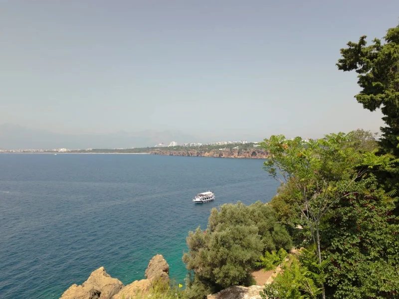

Fotoğraf Düzenleme
Antalya Sahili — Görüntü Temizleme
Antalya sahilinin 25 karesini Median yöntemiyle birleştirip hareketli tekneyi görüntüden kaldırdığım projem.
Adobe Photoshop · Onur Can Orhan · Kasım 2026

Image Stack
Antalya sahilinde hareketli tekneyi temizleme
Sabit kamerayla çekilmiş Antalya sahil görüntüsünden 25 kareyi tek belgede birleştirdim. Amaç, manzarayı koruyarak hareket eden tekneyi görüntüden kaldırmaktı.
Nasıl hazırladım?
800 × 600 piksel ve 72 dpi kareleri katmanlar olarak yükledim. Katmanları tek bir Smart Object’e dönüştürüp Stack Mode > Median uyguladım. Farklı karelerde yer değiştiren tekne elenirken sabit kıyı ve manzara korundu.
25 kare · Smart Object · Stack Mode: Median · Hareketli nesne temizleme

Ortaya çıkan sonuç
Kıyı ve manzarayı koruyarak hareketli tekneyi son görüntüden çıkardım. Birden fazla karede değişen bölgeleri ayırmak için Image Stack kullandım.